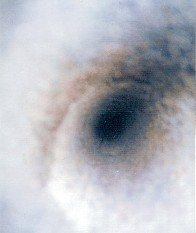

las pasiones como la ira ya no se sienten... porque lo importante es no sentir ira... controlarla es sencillo... para eso envejecemos,
para ser mejores, no para convertirnos en santos , sino, en verdaderos seres humanos.
A prudencial distancia del espejo...
Autor: Carlos Alberto Gallardo Chambonnet Gallnnet E-mail : gallardochambonnet@gmail.com |
 |
Deseo enviar, por los valores de la fraternidad
y la solidaridad, algunos de mis intentos, sin restricciones
de ninguna clase...ya que el poema " si así puedo llamarlo"
deja de ser personal cuando penetra en el alma
de quien lo lee.
UN HUMILDE REGALO...
| No tenemos en nuestras manos las soluciones del mundo, pero ante los problemas del mundo, tenemos nuestras manos. MADRE TERESA DE CALCUTA |
 Envejecemos
para que el alma vaya madurando y corrigiendo los errores de la juventud, esto
ocurre por ejemplo, cuando
Envejecemos
para que el alma vaya madurando y corrigiendo los errores de la juventud, esto
ocurre por ejemplo, cuando
las pasiones como la ira ya no se sienten... porque lo importante es no sentir
ira... controlarla es sencillo... para eso envejecemos,
para ser mejores, no para convertirnos en santos , sino, en verdaderos seres
humanos.
Yo me quedo en los minutos que no vuelven... Gallnnet
al ver a un verso pasar... Gallnnet
En esta nueva clase de verso, creado por su servidor, los hemistiquios, isostiquios o heterostiquios, no se toman en cuenta, pues esto, alteraría su métrica…
Acentos rítmicos en las sílabas… 3-7-11
Algunos poemas anteriores.
MI MUNDO V. S.
Interpreto a un mendigo
Siento el vértigo del miedo y la impotencia
que devoran mis entrañas, sin piedad,
me dirijo hacia el altar, pido clemencia
a la sombra de aquel Cristo en soledad.
Soy humilde, desdichado limosnero,
en la puerta de la iglesia pido pan;
andrajoso es mi vestido ,y el sombrero
donde dejan las limosnas que me dan.
Abre el cielo la mañana, implanta el día,
sin distingo de razones; con frialdad,
baja el sol con luz de tarde en romería
y a mi sino, le llovizna la impiedad.
Otro día que se filtra en la semana
a este mundo que hilvanando he de entender
aunque nazca para mi cada mañana
con el negro resplandor de un padecer.
Siento amor por los que alumbra una alborada;
por aquellos que no saben que es perder
y por esos cuya edad luce dorada
y aunque viejos, no han sabido comprender.
Siento amor por la mirada desgastada
sin retoños que renueven la visión;
por la edad, que cada día es renovada
con pequeños algodones de ilusión.
Siento amor por la sonrisa que es negada,
porque soy un pobre ser sin distinción
a mi edad, las diferencias no son nada.
¡La grandeza está en amar sin condición!
Dodecasílabo de verso simple o continuo
En esta nueva clase de verso, los hemistiquios, isostiquios o heterostiquios, no se toman en cuenta, pues esto, alteraría su métrica. Acentos rítmicos en las sílabas… 3-7-11
 VOY BUSCANDO V. S.
VOY BUSCANDO V. S.
Voy buscando algo que busco, sin hallarlo;
y si lo hallo, me confunde la razón
porque, más que poseerlo y alcanzarlo,
se me pierde en la llamada sinrazón.
Es un mundo ranurado, de ficciones
en mi vago caminar ya si sazón
las estrías de mi vida, pretensiones
de respuestas que no tienen conclusión.
Los misterios de la vida ¡Cuántos años
transitando sin tener la solución!
Ya cansados van mis pies en sus calcaños
por tratar de dar sentido a la intención
de esas cosas, tan extrañas, que soñamos
o que existen por estricta decisión;
se evaporan a la hora que nos vamos
y nos vamos sin siquiera una versión.
Pienso a veces: ¿Es verdad que sólo estamos
en un mundo donde somos ilusión;
que es un sueño que llevamos y acercamos
con preguntas sin respuestas hasta, Dios?
¡Con la carne y el espíritu forjamos
esta vida, que al final, se parte en dos!
El espíritu se eleva… festejamos
y en la tierra se nos queda el corazón.
A Los Indigentes.
Deambulando por las calles
o por orillas de acera
meditan sobre los bultos,
bultos de basura vieja.
Se encuentran al final de mis dos ojos
los ciclos de dolor humedecido
por la injusticia de no haber crecido
en opulencia. ¡Vivo entre despojos!
No tuvieron fragancia mis antojos
sino el vulgar hedor del mal nacido,
un pasado, un presente enmohecido
en ese suplicante andar de hinojos.
¿Nunca podré saber qué mal destino
se ensaño en mi doliente y vana vida?
Viví sin conocer el buen camino...
enfrascado en las luchas tan tempranas
ni siquiera un amor tuvo cabida,
ni un recuerdo feliz en las mañanas
MIENTRAS HAYA UNA LÁGRIMA EN EL MUNDO…
No son versos… ni poesía lo que me sale del alma, es el dolor de los días, de verlos sin esperanzas...
Dedico este intento de soneto a aquellas seres humanos, que por su condición
o apariencia física, muchas personas, consideran que no lo SON.
 A VECES
A VECES
Y a sus labios,
ya sin calor y sin respuesta,
uní los míos,
confirmando nuestro amor,
en gélido finito.
_ _ _
Desde entonces… al elevarme,
en el serpeado resplandor
de la alborada;
o, cuando declino cual luz del día,
entre rendijas,
sobre el cuerpo de la tarde
como gota extendida de rocío,
y absorbo los colores del crepúsculo;
esparzo el pensamiento
enrollado en las estrellas vespertinas,
conciliado con la magnificencia espectral
en láctea inmensidad del universo:
A veces, difusión de distancias solamente;
otras, soledad que abraza al beso.
¡Póstuma caricia de amor…
en el portal del infinito!
Gallnnet
 EN LAS NIEVES DE LA EDAD,CUELGAN GUIRNALDAS V.S.
EN LAS NIEVES DE LA EDAD,CUELGAN GUIRNALDAS V.S.
Dodecasílabo de verso simple o continuo... En esta nueva clase de verso, creado por su servidor, los hemistiquios o isostiquios y heterostiquios, no se toman en cuenta, pues esto, alteraría su métrica. Acentos rítmicos en las sílabas… 3-7-11.
Son las nieves de la edad, en mis praderas
donde un tiempo fulguraron los ardores
hoy mi pecho solo siente los temores
del final que se refleja en las quimeras.
Es la vida catarata de las eras
donde inician el cantar los trovadores
recordando los hechizos… los amores
que se guardan en las viejas primaveras.
Hay ventiscas de secretos. Hay listones
de pasiones que parecen olvidadas.
Tras un pórtico de almíbar hay fisgones
apostados en ribetes de esmeraldas:
son sonrisas, largos besos y canciones
que construyen con recuerdos mis guirnaldas.
 YA PASÓ LA TARDE
YA PASÓ LA TARDE
Ya pasó la tarde
pasó sintiendo el eco de mi respiración
anudando como siempre
los espacios de luz
en algún rincón de los tejados;
cuadriculándose en mis ventanas
mientras pierde sus colores
y desviste los árboles de su verdor.
En la mesita con bordes de historia
flagela con el roce de su caricia gris
los zapatitos blancos que vinieron de Suecia.
La tarde va mutando los jazmines y las gladiolas
al resbalar sobre el jardín
el hilado que borda en los espacios de oscuridad
y las mantillas esmaltadas de luz de luna.
Escribo tratando de evadir el miedo
ese miedo que afronto a diario frente a la vida
al mundo que derrama su lava
como volcán herido en su cumbre
y va arrasando, encendido en impiedad
las facetas de una paz que sigue germinando
en los corazones de hombres y mujeres
que a diario se levantan con esperanza
de un mundo mejor… el mismo que ansía ver
tu corazón y el mío…
¡Qué hermoso el platinado de la Luna !
Sobre el charquito que reposa inocente
entre las raíces del abeto….
A MIS MADRUGADAS
(Dodecasílabo 7 -5)
¡Oh! Madrugada virgen que me acompañas
en los tortuosos bosques de mi sapiencia
mientras la luna pinta con sus pestañas
el manantial oscuro de mi conciencia.
Tienes el grito henchido de mis entrañas
que rasga aquel silencio con insistencia
sacando aquellos versos con telarañas
y denunciando errores de la insapiencia.*
En ti, recuesto al sueño que se revela
y si el cansancio aturde mis pensamientos
tú, con sereno cubres, mi noche en vela.
Eres el verde negro sobre la piedra
donde se arraigan cuitas y sentimientos
como en los duros muros la verde hiedra.
Carlos Alberto/Gallnnet
Agto. 2003
 CON AQUELLA PLACIDEZ III
CON AQUELLA PLACIDEZ III
Disuelvo el lapso de la noche
en que pasivo de amor… dormía.
¡Ahora , envuelto en la airosa luz albina ,
me aferro con infinita gratitud,
a los bordes que le dan la forma al día!
Sus labios, con aquella placidez
de ancianidad, que guarda
en la frescura del ayer… esa sonrisa.
Latidos blancos entre sábanas
y calor de vida en cada mano
en cada caricia … en cada espacio
de ese incontrolable momento
cuando las almas hablan en los cuerpos
para entrar en esa unión que nos subyuga.
Se opaca , entonces, como levitando
la luz con forma de ventana
y se encienden la lumbre del amor
en el placer de cada beso…
 AMANECER
AMANECER
IV
Tiene estrías de luz el firmamento
nubes rojas y estrellas apagadas
es paisaje común de madrugadas
que al pintor o al poeta dan aliento.
En las trenzas del alba el dulce acento
de las brisas, que llevan engarzados
los trinos de las aves con bronceados
temblores de una aurora en nacimiento.
Las flores abren su frescor al día,
hay vientos alfombrados de esperanza,
cielos azules con mi fantasía:
Un mundo que despierta en alabanza
para ofrecerle a Dios, esa alegría
al decirle, Señor, sí hay semejanza
. . .
 SUPUESTAMENTE
SUPUESTAMENTE
El Mundo
un mágico espejo de ilusión
con sus colores
con sus sonidos
danzando libres
rozando el tiempo
yo, en mi Parnaso
rondo los cielos
y escarbo abismos
busco respuestas
la que debieron surgir
en el camino
cuando llegaba
a este lugar.
Ya estoy por irme
sigo esperando
haciendo al tiempo
una sobrilla donde esperar
hasta el momento
supuestamente
en que suponga
que fui en el mundo una realidad.
. . .
ME AGRADA JUGAR CON LAS FORMAS, SI TENGO POR LIENZO EL ALMA...
 SOLAMENTE
VERSOS III
SOLAMENTE
VERSOS III
El agua secó su humedad en la roca
y el perfume de la flor
se desprendía en un silencio saturado de ambrosía
en gaseosas pinceladas de óleo lila
en el lienzo virgen en que se estira el paisaje
como un pensamiento casto.
¡Presunto siempre en la primea entrega!
Tejiendo versos de seda con rayos de luz dormidos
Mis ojos vestían las olas y mis besos lazarillos
se arrastraban a tus pies Y en las cúspides de arena
mis sueños eran caminos que adornaba con tu nombre
mientras llegaba el Domingo.
Esos pálidos semblantes de tus alientos dormidos
son mi regazo en las noches…
Las flores del pensamiento sufren oscuro albedrío
buscando en la luz del alba tus ojos junto a los míos
la noche es un laberinto de lazos y piedras negras
por donde irá mi destino.
Y vislumbrar esa aurora que tomaste al infinito
. . .
 SIETE
LÍNEAS III
SIETE
LÍNEAS III
Se va rastreando el tiempo con recuerdos
de insomnio son los versos de los dos
escritos en las sábanas de invierno
guardados con temblor de adoración
son versos que no llevan un te quiero
sino un silencio efusivo de interior
que queman, ahogando el frío de invierno
la piel del sexo curtida en el amor.
. . .
 NO
QUIERO III
NO
QUIERO III
No quiero que el viento se lleve mis palabras
en sordomuda expresión del no soñar.
Quiero que sepas que hay un sueño
un sueño que amarro
a la grupa salvaje de mi alma
hasta estar contigo y dejar de sollozar
lejos, muy lejos de mis crepúsculos
donde no hay aves, ni sol quemando el rojo
sólo espíritus de pesar y cantos de silencio
que cuelgan de los rayos en póstumos declives
ya sin casi sin luz
en el boquete de un oscuro azar…
El alba amarra bucles de colores
en la cintura desnuda del amanecer;
el mar deja sus lágrimas de espuma
en las plantas soñadas de tus pies…
No, no quiero que el viento se lleve mis palabras
cosiendo versos sin voz, donde está todo
sin decir nada
sin poder elogiarte a ti, mujer…
Llegan nuevos cantares en la brisa |
Carlos Alberto/Gallnnet
PARA TRUNCARLE AL MUNDO…
Hay cristales que duermen en mi frente
llevo espejos dormidos en el alma
hay cantares que escucho solamente
si ya la tempestad pasó a ser calma.
El cielo que era estaño se ha encendido
el mar que estaba oscuro se ha dorado
y en la ventana el pétalo dormido
se viste con la luz esperanzado.
Yo dejo de soñar, pintar desvelos
en esa soledad de cuatro esquinas
y en luz de libertad levanto vuelos
para truncarle al mundo las espinas.
El canto de Zorzal, llevo por dentro
el color de las flores en la vista
en los labios los versos que me encuentro
a tono con la acción que es imprevista.
Preludio del amor nació en pesebre
llenando de esperanza el mundo entero
y quema el corazón ver tanta fiebre
buscando en la impiedad su derrotero.
N del A: Fiebre, en su expresión lugareña
o modismo quiere decir desesperación por algo. Ej. Tienes fiebre de mariscos…al
menos así lo utilizamos
en el país donde resido
. . .
A MIS NIÑOS POBRES...
Se acentúa en el recuerdo esa mirada
cobijada por el nácar de sus ojos
son migajas de expresión, o son antojos
en un cántaro de luz sin alborada.
Lleva sombra de una voz, encadenada
al cansancio de sentir tantos sonrojos
pierden tono de infantil sus labios rojos
y en su rostro la sonrisa es barajada.
Llevo caldo de dolor en la apartada
soledad donde el crujir, voz de festejos
es la música del alma desgarrada.
Y pregunto al vasto azul de los espejos
paladeando aquel color de madrugada.
¿Qué tan cerca estoy de Dios...o qué tan lejos?
. . .
ME QUEDÉ III
Me quedé en el minuto que no vuelve
en los pucheros que fungí cuando bebé
en la talla del crecer que quedó atrás
pulgada menos pulgada más
en el verso que escribí cuando pequeño
en la voz con que llamaba a mi papá
en el sueño que se fue desvaneciendo
en la oruga que esperé a ver volar
en la diáfana mirada de la abuela
en el beso que le daba a mi mamá
en las manos arrugadas del abuelo
en los pasos con que pude aquí llegar
me quedé, me quedé, me quedé atrás.
Gallnnet
Autobiografía
GALLNNET es el seudónimo de Carlos Alberto Gallardo Chambonnet, nacido en Panamá el 14 de Abril de 1930. De cuna humilde, comenzó sus estudios
primarios colegio La Salle que por motivos económicos tuvo que
culminar en la escuela República de México, donde su madre
ejercía como maestra. Comenzó sus estudios secundarios
en el el Instituto Nacional, donde terminó el primer ciclo, graduándose
luego de Perito Mercantil en la escuela Isabel Herrera de Obaldía.
Comenzó estudios universitarios en la facultad de Humanidades
abandonando los mismos por razones de fuerza mayor. Como experiencia personal, participó en diversos concursos de novela y poesía en los años 1990, 2000, 2001 y 2002. Durante sus estudios en la escuela Profesional, participó en un concurso de cuentos donde ocupó el tercer lugar con"La Rosa Blanca". Ha tomado cursos de "Cuenta Cuentos" y ha desempeñado el cargo asistiendo a bibliotecas bajo la dirección de la Biblioteca Nacional E.J.C.R. También, recientemente tomó un curso de Palabra Abierta, dictado por el profesor y poeta nacional Héctor M. Collado y está gestionando la asistencia a un curso para componer décimas. Su Pensamiento favorito: "La Humildad es la mayor virtud" |
|
*Soy partidario del uso de las licencias métricas, las considero necesarias
para la elasticidad del verso.